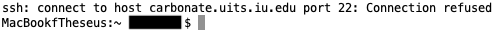

Using R on Indiana University’s High Performance Computing (HPC) Cluster
When working with bioinformatics data, it’s only a matter of time until you encounter a problem too big to solve using your local machine. Transcriptomics is growing exponentially, but lab budgets are not. Whether you’re processing a multi-terabyte DNA-methylation dataset or attempting a gene set enrichment analysis with a 7 day run time, eventually you’ll need additional computational firepower to get the job done. When that day comes, this post will be here to help you bust out the big guns.
This post will guide you through setting up a HPC account, connecting to Carbonate via SSH, and configuring R to work with Carbonate. It is designed to be accessible and easy to understand, even if you haven’t worked with the command line before.
Note: Carbonate is IU’s solution to big data/machine learning problems. It is separate from Big Red, the IU supercomputer you may be familiar with. If you want to learn how to use Big Red, I recommend checking out this post. Carbonate, Slate, and Big Red are only available to those affiliated with Indiana University (generally; graduate students, faculty, or staff.)
Creating a Carbonate Account
The first step is to create a Carbonate account. Navigate to access.iu.edu/Accounts, click the “Create Account” button, and select Carbonate. The account creation process takes ~15 minutes. Sit tight and wait for an email to arrive, informing you that your new account is fired up and ready to go. While you’re waiting, I’d recommend creating a Slate account as well.
Using SSH
Now that your account is online, it’s time to access Carbonate for the first time! This can be done using SSH, or Secure Shell Protocol, a method that allow users to securely access servers by encrypting incoming and outgoing information. First, open up Command Prompt (Windows) or Terminal (Mac). Then, using the same username you use to login to your IU accounts, enter the following:
ssh username@carbonate.uits.iu.eduA prompt will ask for your password, followed by a second prompt asking how you’d like to go about 2-factor authentication. Type in your password, verify it’s you, and you should be good to go.
If you encounter problems when logging in, it’s important to take a step back and figure out what’s gone wrong. Repeated, failed login attempts can result in your ip address being banned. If this happens, you’ll get an error message that looks something like this.

If you do see a message like this, just ask the fine folks at UITS Research Technologies for help. They should be able to get you on the right track. (To be honest, if you’re struggling with any part of this guide, you could do worse than reaching out to them. The people over there are prompt, helpful, and unfailingly nice.)
Requesting Resources and Loading R
 Once you’re connected to Carbonate, you’re basically a guest in someone else’s computer, so be sure to mind your P’s and Q’s. Unfortunately, unix environments don’t generally recognize the “please” command: You’ll need some other way to ask the system for the resources you need. That’s where slurm comes in.
Once you’re connected to Carbonate, you’re basically a guest in someone else’s computer, so be sure to mind your P’s and Q’s. Unfortunately, unix environments don’t generally recognize the “please” command: You’ll need some other way to ask the system for the resources you need. That’s where slurm comes in.
Slurm is a workload manager that controls how computing resources are doled out. To ensure that you have access to the necessary computing power, you need to to request an interactive session, in debug mode, for a total of one hour. This is done with the following command:
srun -p debug -N 1 --time=01:00:00 --pty bash(Note, debug mode limits the amount of computing resources available, but minimizes wait time) Next, check what versions of R are available on Carbonate. At the time of writing, the most recent version hosted on Carbonate was R 4.0.4
module availRunning the above code will return a list of all available programs, packages, and languages available on Carbonate. In the STATMATH section of the list, the available versions of R will be listed. Once you determine the latest version of R that’s available, you’re ready to move to the next step.
Configuring R
Using the Command Line
When using RStudio on a local machine, all the necessary configuration is handled behind the scenes. For example, you don’t have to tell R where to go to download new packages or where the new packages should be stored. When working on Carbonate, things aren’t quite so easy. Luckily, manually configuring R isn’t terribly difficult, it just requires a little bit of maneuvering on the command line. Here’s a quick primer on bash commands, in case you haven’t used the command line or worked in a unix environment before.
pwd #get the current working directory
cd #return to the home directory
cd Some/New/Directory #Navigate to a different directory
cd .. #Go one directory up
ls #list all files and folders in the current directory
ls -a #List all files, including hidden files (ex: .hidden_file.txt)
mkdir #Create a new directory
cat InterestingData.txt #read data from files
vi/vim NewScript.R #Creates a new file and opens it in a command line text editorSetting Up Your .Renviron
Start by creating a local directory to store R packages. First, check that you’re in your home directory, then create a new directory called R. Next, navigate to the new directory and create a subdirectory for the version of R that you’ll be working with (either 4.0.4 or the most recent version available on Carbonate.) Finally, return to your home directory.
pwd #This should return /N/u/username/Carbonate
mkdir R #Create R directory
cd R #Go to R directory
mkdir 4.0.4 #Create version 4.0.4 directory
cd 4.0.4 #Go to 4.0.4 directory
mkdir library #Create 'library' directory, the location where packages will be stored
ls #Confirm the new directory was created
cd #Return to the home directoryNow that the directory has been created, R has to be told to use this location to store packages. This can be done with an .Renviron file. You’ll have to create a file called .Renviron and use it to point to the location of your new library directory. Then, whenever R attempts to install or load a file, it will this directory.
A quick note before you begin: You’ll have to use vim to edit the .Renviron file. Vim is… weird, man. If you’ve never worked with it before, it can be a little intimidating. It was first released in 1991 (30 years ago!), and it feels every bit as old as it is. Here’s a handy reference to vim commands to get you started.
pwd #Make sure this returns /N/u/username/Carbonate
vim .Renviron #This opens up vim, where you can edit your new file
#When in vim, press "i" to enter INSERT mode, where you can freely add text. Then, enter
R_LIBS_USER="~/R/4.0.4/library"
#Hit the escape key to exit INSERT mode, then type ":x" to exit vimSetting Up Your .Rprofile
Now R knows where to download new packages to, we still have to specify where R should download files from. This is done in your .Rprofile. You’ll create this file and with the same methods you used to create the .Renviron, then write/copy and paste a couple lines of code instructing R to download packages from the CRAN repository hosted by IU.
vim .Rprofile #Create your RprofileThen, enter the following
local({
r <- getOption("repos")
r["CRAN"] <- "http://ftp.ussg.iu.edu/CRAN/" #Specify the CRAN mirror hosted by IU
options(repos = r)
})Once you’ve exited vim (remember, “:x”), you can start installing packages!
Installing Packages
When installing packages in R, external tools are sometimes required in order for the package to compile and install correctly. Usually, all that’s needed is a compiler for a different programming language, such as C++ or Fortran. Luckily, Carbonate has these tools pre-installed. For most packages, you only need to load one module: Boost, a collection of C++ source libraries. At the command line, enter the following.
module load r/4.0.4 #First, load the latest version of R
module load boostNow that boost and R are both loaded, you can begin installing packages! Of course, the packages you install are dependent on what you need to do, but there’s a couple that you’ll probably need no matter what. To begin, you’ll need to run R. This can be pretty tricky, so make sure you don’t make any mistakes entering this code:
RNow that R is running, you can interact with R through the terminal the same way you would in R Studio. When choosing which packages to install, I’d recommend starting out with the following
install.packages("tidyverse")
install.packages("devtools")
install.packages("BiocManager")
install.packages("Seurat")And that’s it. R is officially installed! When you’re finished, you can exit R with the q() command, then sever the ssh connection by simply typing ‘exit’.
Look out for the next post, where I’ll outline how to submit batch jobs, request more memory, and upload/download files.
PS: Troubleshooting Installation Errors
There’s a chance that you’ll see the following error when attempting to install a package
unable to load shared object symbol not recognized: RegFreeAIf that pops up, exit R and unload the boost module (ie.)
module unload boostthen, retry the package installation.